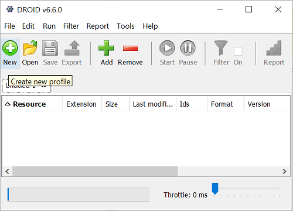
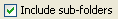
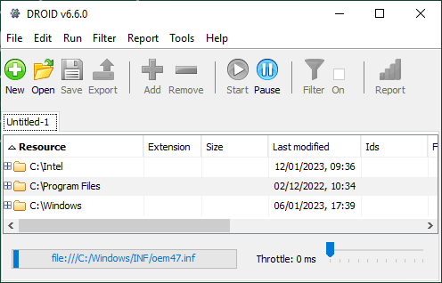
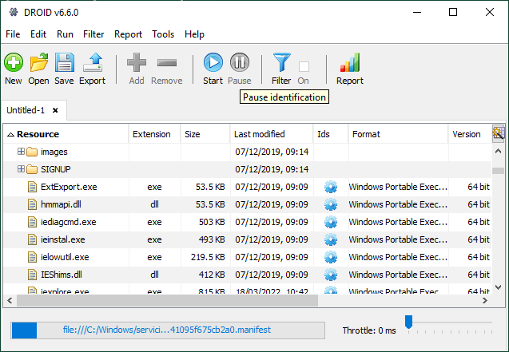

Profiles
Create a new profile
A profile is the files and folders you want to find out about, and the results of
profiling them. You can create profiles by clicking the New button, or selecting the
File / New menu item. DROID automatically creates a blank profile for you when it starts.

You can create as many profiles as you like. Each profile appears in its own tab,
underneath the toolbar. You can choose files and
folders as soon as the tab appears using the Add command,
but it takes a few seconds for a new profile to be ready to run. By default, profiles are "Untitled" until they are saved with a filename.
Once a profile is created, its settings are fixed from the Profile Defaults specified in the preferences window.
Choose files and folders
To add files and folders to a profile, click the Add button, or
select the Edit / Add files and folders menu.
You can also right-click with your mouse on the main profile window, and
select the Add option from the popup menu.
A selection window will appear. On the left-hand side is a navigator to explore your folders. The example below shows the "Internet Explorer" folder selected on the left-hand side, and the contents of this folder are shown on the right.
Any files or folders selected on the right will appear in the "Selected resources" text box at the bottom. Select multiple files and folders at the same time by holding down theSHIFT key to select a list, or the CTRL key to individually select or deselect files or folders.

Include subfolders
When a folder is added to a profile, it is often useful to also profile all of its subfolders. Underneath the selected resources text box,

is checked by default. Uncheck this box if you only want to profile the files directly inside a folder and to ignore any subfolders. If you are only selecting files, this setting makes no difference. Note that if you are profiling inside archival files, they will still be profiled regardless of this setting, which only applies to folders in the file system you are profiling.
Adding your selection
Press the OK
button to add the selected files and folders to your profile, or the Cancel
button to leave the selection window with no changes made. Addcan be used repeatedly to add files and
folders from different locations in your file system to your profile.
Removing your selection
To remove files or folders from the profile, select them in the main window, and either
press the Remove button, or use the Edit / Remove files or folders menu item. You can also
right-click with your mouse on the main profile window, and select the Remove option
from the popup menu.

Only the top-level files and folders you have added to a profile can be removed. When you run a profile with a folder, the profiling process will automatically add the files and folders it finds underneath it. After you run a profile, you cannot add or remove files or folders from the profile anymore—its specification becomes fixed.
Running a profile
You can start profiling files or folders using the Start button, or by selecting the Run / Start Identification menu item.

As files and folders are identified, they are added to the profile, and you can see all the results obtained so far. If you expand a folder, it will show all the files and folders found so far. If you happen to open the folder that is being profiled at that time, you will see its child files and sub-folders appearing under it.
Once you have started a profile running, you cannot choose any further files or folders in it. The specification of which files and folders to process in your profile becomes fixed at the point it first begins running. If you want to subsequently profile other files or folders, then you can do this in a new profile. Results held in multiple profiles can be exported and reported on together.
Progress
When your profile first starts running, it counts all the files and folders in your profile, including those in sub-folders. Once it has counted them, a progress bar will show how much work has been completed, and how much more there is to do.
The progress bar only gives an estimate of progress. Files which exist inside other files (e.g. zip files) are not accounted for, and in any case, files can be added or removed from your file system while your profile is still running. In most cases, the progress bar gives a fairly good indication of the amount of work remaining to be done. The current file being analysed is also displayed, so even if the progress bar doesn't seem to be moving, you can see that it is still profiling.
Throttling back
You can control how quickly or slowly DROID processes the files in your profile, and this can be done at any time, whether your profile is running or not. This can take the load off your computer, network or disks if running it would impact you, or other users. By default, DROID works as quickly as it can, but you can tell DROID to delay for a short amount of time between each file it processes.
To slow down or speed up DROID, use the slider control at the bottom right of the main window. When the slider is at the far left of the control, DROID will work as fast as it can (a delay of zero). When the slider is at the far right, DROID will wait for one second between processing each file. Even very small delays can reduce the load on networks and file servers, so the normal useful range for throttling is usually between zero and a hundred milliseconds.
Restrictions while profiling
While your profile is running, its filter cannot be enabled, and you cannot save it. If you had enabled a filter previously, it will be automatically disabled when your profile is started. Disabling a filter doesn't get rid of it - it just turns it off temporarily. You can turn it on again when the profile is finished, or paused.
In addition, you cannot run any reports or export a profile while it is running. You can report and export other profiles which are not running.
If you want to do any of the above tasks while a profile is running, you can temporarily pause it, carry out the task, and then resume profiling later.
Pausing
You can pause your profile at any time by pressing the Pause button, or by selecting the Run / Pause menu item.

The progress bar will freeze at whatever point it reached, and you will see no further messages about files being analysed in the status bar. Your profile may not pause straight away, as there may be a few outstanding items to be processed in its work queue, particularly if it is in the middle of uncompressing a large archival file. Once paused, there are no restrictions on what you can do with your profile (except that you cannot choose further files or folders once you have started profiling).
Resuming
You can resume profiling by simple running it again, using
the Start command. Profiling will pick up running
from the point it left off, leaving all results so far intact. You can also save a
paused profile, and then open and resume it at a later date. If the files
where your profile was last paused are now different, DROID will attempt to resume by
locating the nearest place it can successfully re-start from.
Saving and loading a profile
DROID can open and save profiles to a file with a .droid filename extension. Note that DROID 6 cannot open profiles created by earlier versions of DROID.
Opening a profile
To open a saved profile, press the Open button,
or select the File / Open menu item. A standard file
open selection dialog will appear. Navigate to the droid profile you want to open,
and press the OK button. The profile will open in a
new tab. If it is a large profile (containing hundreds of thousands of files and
folders), it may take a few minutes to open. A progress bar at the bottom of the screen
shows how much of the profile has been opened so far.
Saving a profile
To save a profile, press the Save button, or
select the File / Save menu item. If your profile has
never been saved before, a standard file save dialog will appear, and you can choose where to
save the file and what name it has. If your profile has
been saved before, it will be saved to the place it was opened from, and no file save dialog
will appear. It is a large profile (containing hundreds of thousands of files and
folders), it may take a few minutes to save. A progress bar at the bottom of the
screen shows how much of the profile has been saved so far.
To save an existing profile to another file, select the File / Save As...
menu item. This will always bring up a file save dialog, allowing you
to choose a different file to save to.
Profile files
Profile files are actually zip files, which contain some XML files describing the
profile, and a database containing any results of profiling so far. DROID currently
uses the Apache Derby database, version 10.7, which can be opened using
various third-party tools, such as DB Visualizer The username to connect to a droid database is
droid_user, and the password is the same as the username.
It is possible to manually edit the profile settings contained within the profile.xml file. However, it is
not recommended that you do this, as changing settings within a profile may mean that
inconsistent results are returned (if the profile is paused and there are remaining results
to process), or may even cause DROID to crash if the settings conflict with the profile
state. In particular, you must not change which signatures are used by a profile.
We cannot guarantee that other settings are safe to change. Changing this file is
entirely at your own risk.